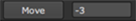

To show the Dope Sheet, click the Dope Sheet tab. If you can’t see the tab, right-click the Node Graph title bar and select Dope Sheet.
In the Dope Sheet, you can see:
• Hierarchy view - Click through the hierarchy view to see your nodes and a hierarchical list of animated controls. If you can’t see a node in the list, try opening its properties panel.
TIP: You can open a node’s properties panel by clicking the node in the hierarchy view.
• Read nodes - Any Read nodes that have their properties panels open display as gray bars in the Dope Sheet.
• Time nodes - Any AppendClip, FrameRange, Retime, TimeOffset, TimeWarp, and TimeClip nodes that have their properties panels open display as green bars.
• Keyframes - Your keyframes display as gray markers in the keyframe grid. If you go down to the lowest level of hierarchy, you can also view the keyframes set for different views in stereoscopic or multi-view projects.
• Current frame indicator - The current frame indicator displays as an orange line.
• First and last frame in the project - The first and last frame in the project's frame range (as defined in the Project Settings) display as gray lines.
You can also use the following controls at the bottom of the Dope Sheet:
|
Control |
Description |
|---|---|
|
Synchronize the frame range of your project between the Dope Sheet and the Curve Editor. |
|

|
Display all Read and TimeClip nodes in the Dope Sheet. By default, only the nodes that have their properties panels open show up on the Dope Sheet. If you click this button, all Read and TimeClip nodes in your script are displayed in the Dope Sheet. If you click the button again, the default view is restored. |
|  |
Move the selected keyframes by the number of frames specified. You can enter negative values to move the keyframes backwards. NOTE: You cannot move keyframes past other keyframes. If you don't enter a number in the Move field, it shows the amount of your previous move. |
|
|
Set the frame range to display in the Dope Sheet. |
|
|